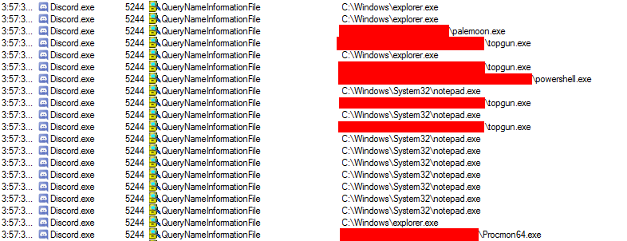
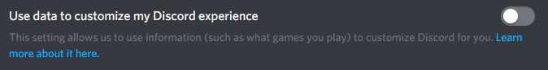
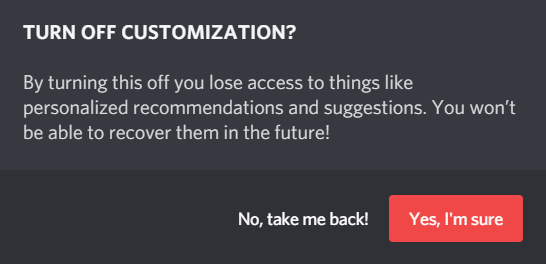
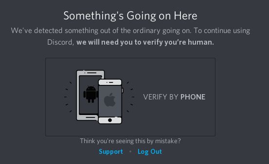

Discord
Discord é um aplicativo de mensagens instantânewas para macOs, Windows, GNU/Linux, Android e iOS. O Discord é usado para se comunicar via chat de voz e chat de texto e possui recursos de compartilhamento de imagens e compartilhamento de arquivos.
Nível de Spyware: EXTREMAMENTE ALTO
Obrigado a Richard Stallman por se referir ao nosso artigo aqui! Nós agradecemos o destaque.

O Discord é um spyware porque coleta todas as informações que passam por sua plataforma de comunicação. Como o Discord é uma plataforma de comunicação centralizada, todas as comunicações devem passar pelos servidores oficiais do Discord, onde todas essas informações podem ser gravadas. A grande maioria dessas informações foi confirmada ser gravada, como todas as comunicações entre os usuários. Também foi confirmado que o Discord usa outros recursos de spyware, como várias formas de telemetria. A principal fonte de receita do Discord vem de investimentos, dos quais recebeu mais de $ 279,3 milhões de dólares[4]. O Discord não pode ser compilado a partir do código-fonte e o código-fonte do Discord não é disponível.
Discord não disponibiliza seu código-fonte
É impossível baixar e examinar o código-fonte do Discord, o que significa que é impossível provar que o Discord não é um spyware. Qualquer programa que não disponibilize seu código-fonte é um spyware em potencial.
Discord confirma que coleta grandes quantidades de dados confidenciais do usuário
Discord confirma explicitamente em sua política de privacidade[1] que coleta as seguintes informações:
- Endereço de IP
- UUID do dispositivo
- Endereço de e-mail do usuário
- Todas as mensagens de texto
- Todas as imagens
- Todos os dados VOIP (chat de voz)
- Taxas de abertura de e-mail enviado pelo Discord
O Discord não confirma explicitamente que coleta essas informações, mas ainda as coleta por padrão:
- Logs de todos os outros programas que estão abertos no seu computador
As implicações dessas informações podem ser divididas assim: Ao registrar seu endereço IP, o Discord pode rastrear sua localização geral (tão precisa quanto em qual condado você está). O Discord também pode dizer quais dispositivos você usa, pois identifica exclusivamente cada dispositivo e quanto você usa esses dispositivos, pois pode registrar seus hábitos de uso do dispositivo (já que o Discord geralmente é aberto em segundo plano para receber mensagens). O Discord também registra todas as interações que você tem com outros usuários por meio de seu serviço. Isso significa que o Discord confirma que registra todas as conversas que você tem através do Discord, e grava tudo o que você diz no Discord, e visualiza todas as imagens que você envia através do Discord. Portanto, nenhuma de suas interações no Discord é privada. A política de privacidade do Discord também contém várias ocorrências de frases como "incluindo, mas não limitado a", que é uma confirmação explícita de que o Discord contém mais recursos de spyware que não são divulgados ao usuário."
O Discord contém recursos que permitem a integração com outras plataformas de spyware
O Discord contém o recurso de spyware opcional conhecido como "integração de mídia social". Isso permite que você sincronize sua identidade de usuário persistente em outras plataformas de spyware, como Facebook e Twitter. Em sua política de privacidade[1], o Discord confirmou que, se você optar por esse recurso de spyware, o Discord obterá uma quantidade não revelada de acesso às informações obtidas sobre você pelas plataformas de spyware com as quais você escolher sincronizar.
Discord contém um registrador de processos
O Discord confirma que monitora os processos abertos em seu sistema operacional. Este é um recurso de spyware conhecido como "process logger" que geralmente é usado para registrar seus hábitos de uso do programa. Isso foi confirmado pelo CTO do Discord em um tópico do Reddit.[2] No mesmo tópico, o CTO também elabora que esse recurso de spyware (o monitoramento de processos) é obrigatório para vários recursos da plataforma. O CTO e um engenheiro do Discord afirmam que o Discord não usa o registrador de processos para enviar registros dos processos abertos no computador do usuário.
O teste para provar que Discord monitora processos foram feitos novamente pelo escritor no procmon em 11/04/2019 e com os recursos "Usar dados para personalizar minha experiência no Discord" e "Exibir o jogo em execução no momento como uma mensagem de status" desativados. O Discord NÃO registrou todos os processos abertos dessa maneira. No entanto, ao definir "Exibir o jogo em execução no momento como uma mensagem de status" ativado, o comportamente descrito em[2] foi replicado. Você pode ver esse comportamento aqui:
O Discord afirma que esse recurso pode ser desativado por meio da interface do usuaŕio. Isso é tristemente falso. Devido à natureza do software de código fechado, não é possível para este artigo ou para os desenvolvedores do Discord provar quanta informação está sendo enviada para os servidores do Discordquando o regitrador de processos está ativado. Mas pelo menos é possível desligá-lo.
O Discord usa seu registro de processo para publicidade
O Discord mostra isso em sua opção de privacidade:
Que os recursos de registro do processo do Discord agora estão sendo registrados nos servidores do Discord como uma forma de telemetria (spyware) e remove as especulações sobre o motivo da existência desse recurso. É esclarecido pelo Discord que esse recurso de spyware é usado para publicidade para seus usuários.[8] Isso significa que o Discord está gravando os programas que você abriu para criar um modelo estatístico de quais programas você pode comprar/licenciar no futuro.
O Discord tenta forçar alguns usuário a fornecer seus números de telefone
O Discord bloqueará os usuários de seu serviço e não permitirá que continuem a usá-lo sem fornecer seu número de telefone ou entrar em contato com o suporte do Discord. Isso é especialmente verdadeiro para usuário do TOR. Esse tipo de recurso é projetado para extrair informações muito pessoais de seus usuários (números de telefone). Os critérios para bloquear usuários não são conhecidos.
O Discord recebe solicitações do governo por suas informações
O Discord confirmou em uma correspondência por e-mail[6] que recebe solicitações de informações do governo. Portanto, sabemos que o governo potencialmente tem acesso a todas as informações que o Discord coleta sobre você. Você pode ler uma cópia da imagem do e-mail postada na fonte aqui caso o link morra.
Especulação sobre o futuro do Discord
Não se sabe se o Discord atualmente está ou não vendendo informações do usuário. Atualmente, o Discord tem sido capaz de aumentar de forma consistente o novo capital de investimento, que está em um nível em que poderia razoavelmente cobrir todos os seus custos operacionais. No entanto, o Discord, como qualquer outra empresa, não existirá em um estado constante de investimento. O Discord terá que passar de um modelo de negócios financiado por investimento para um modelo de receita que depende exclusivamente da geração de receita dos usuários da plataforma.
O Discord tem várias maneiras de ganhar dinheiro. Ele pode licenciar emojis e outros recursos do programa como o Discord Nitro[5], ou pode ganhar dinheiro licenciando videogames po meio de sua nova loja online, como concorrente da Steam. No entanto, essas duas fontes de receita podem não ser suficientes. O Discord arrecadou $ 279,3 milhões de dólares[4] e tem que devolver esse investimento. (que é mais de 239,3 milhões de dólares que devem ser pagos.)
Se o Discord não for capaz de cumprir sua obrigação com seus investidores, ela tem uma terceira opção - vender informações do usuário para anunciantes. O Discord já está minerando dados de seus usuários para produzir seu sistema de recomendação,[8] o que significa que já está transformando sua base de usuários em dados de publicidade extremamente valiosos e vendáveis. O Discord tem 130 milhões de usuários[7], e pode produzir um modelo estatística de quais jogos cada usuário (que não bloqueia os anúncios) possui, joga e deseja comprar. Esta é uma informação incrivelmente valiosa que o Discord pode vender se não conseguir cumprir suas obrigações de lucro com seu modelo de receita atual. Se o Discord fosse uma loja de jogos de sucesso, não precisaria fazer isso. Mas se o Discord tiver problemas financeiros, provavelmente será forçada a liquidar esse ativo.

{kind=link}